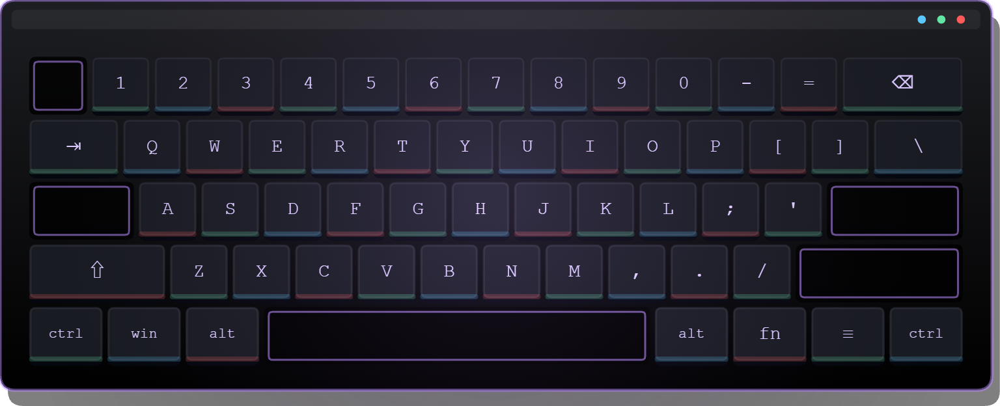

기준 문서: html/ui-prototype.html · 색은 그 파일의 :root 토큰만 사용(신규 팔레트 0)
왜 만들었나 — html/ 22개 목업에 메인 메뉴 화면과 런 플레이 필드 배경 디자인이 존재하지 않는다.
런 화면 목업(ui-prototype.html 게임 레이아웃 탭)은 배경이 #080d12 단색이고,
메인 메뉴는 전환 데모의 회색 placeholder 라벨로만 언급된다. 즉 지금까지 아무도 디자인한 적이 없는 두 화면이다.
엔진 실측에서 나온 3가지 결함 (배경 작업 전에 알아야 함)
① 카메라 배경 #314D79는 Unity 기본 청회색이다. Setup.cs:44에 색 지정이 있으나
씬에 카메라가 이미 있어 _ownsRuntimeCamera == false → 한 번도 적용된 적 없는 죽은 경로.
② RunField(모래색 판 + 격자)가 메인 메뉴·설정에서도 꺼지지 않는다 — 메뉴 뒤에 게임 보드가 그대로 비친다.
③ DrawRunBackdrop(UI.cs:219-266)이 액자 테두리·드롭섀도·별점 64개까지 완성돼 있는데 호출부가 0곳이다.
0. 현재 상태 (재현)
비교 기준. 실측 색값 그대로 재현했다.
현재 — 메인 메뉴
UI.cs:295 DrawMainMenu
클릭 투 커밋
데이터 레이크에서 지식을 채굴합니다. 노드 화면으로 이동하거나…
노드 화면으로 이동
장비 메뉴
장착 무기
런 시작
설정
배경 연출 0 · 뒤에 게임 보드 노출
현재 — 런
Setup.cs:76-80
PY
JS
GO
RS
골드 1,240 · 커밋 88 · 23초
카메라 #314D79 + 필드 #C9AB68 + 격자
#314D79 카메라 — 미디자인 기본값
#C9AB68 필드 — 테마 이탈
#0b1218 프로젝트 정본 배경
1. 메인 메뉴 컨셉
공통 원칙 — 전체화면 배경을 반드시 그리고, RunField는 메뉴에서 끈다.
A안 · 메인보드
스킬트리 언어 계승
Click to Commit
MINE THE STACK
런 시작
연구소
뽑기
도전과제
설정
v0.1 · phase-1
B안 · 광맥 단면
채굴 메타포 강조
Click to Commit
DIG · BUILD · SHIP
런 시작
연구소
뽑기
도전과제
설정
v0.1 · phase-1
1-b. 메뉴 배치 — 중앙 vs 좌하단 앵커
배경은 A안(메인보드)으로 고정하고 메뉴 배치만 바꿔 비교한다.
"좌하단 메뉴" 패턴의 정체 — 정식으로는 키 아트 앵커(key-art anchored) 레이아웃이다.
LoL·엘든 링·데스티니가 쓰는 그 구조인데, 스타일 선택이 아니라 결과다:
화면 중앙~우측에 보여줄 그림(캐릭터 렌더·스플래시 아트·실시간 3D 씬)이 있고,
메뉴가 그걸 가리지 않으려고 구석으로 밀려난 것이다. 부수 효과로 ①패드 상하 이동이 짧고
②TV 세이프에어리어에 안전하며 ③울트라와이드에서 중앙만 크롭해도 UI가 안 흔들린다.
함정 — 채울 그림 없이 메뉴만 옮기면 중앙이 비어 구도가 무너지고 미완성으로 읽힌다.
아래 B에서 그 상태를 그대로 보여준다. 즉 이 패턴은 "공간을 비우는" 게 아니라 "공간을 쓰는" 결정이다.
A · 중앙 정렬 (원안)
보여줄 아트가 없을 때의 정답
Click to Commit
MINE THE STACK
런 시작
연구소
뽑기
도전과제
설정
v0.1 · phase-1
B · 좌하단만 이동 (반례)
채울 게 없으면 이렇게 된다
Click to Commit
MINE THE STACK
런 시작
연구소
뽑기
도전과제
설정
v0.1 · phase-1
C · 좌하단 앵커 + 장착 무기 쇼케이스 ← 이 패턴을 쓰려면 이렇게
기존 에셋 재사용 · 신규 아트 0

해커 키보드 · Lv.6
소켓 3 / 4
총 커밋12,480
최고 티어T4
도전과제7 / 15
Click to Commit
MINE THE STACK
런 시작
연구소
뽑기
도전과제
설정
v0.1 · phase-1
판단
내용
아트가 없다면
A(중앙). 좌하단은 빈 공간을 만들 뿐이다
아트가 있다면
C(좌하단+쇼케이스) ← owner 확정. 쇼케이스 = 현재 장착 무기(최종형: 키보드)
절대 하지 말 것
B — 패턴만 흉내내고 공간을 안 채우는 것
2. 런 배경 컨셉
하드 제약 — 필드 안쪽은 절대 덧칠하지 않는다(노드 가독성). 액자·여백·질감만 다룬다.
A안 · 다크 기판
테마 통일
PY
JS
GO
RS
골드 1,240 · 커밋 88 · 23초
필드=다크 슬레이트 · 격자=틸 · 골드 액자
B안 · 지층
깊이감 · 채굴감
PY
JS
GO
RS
골드 1,240 · 커밋 88 · 23초
필드=지층 그라디언트 · 여백=별점
3. 구현 매핑
대상
지점
내용
리스크
카메라 배경
SampleScene.unity:203
#314D79 → #070c11. 씬에서 고쳐야 한다
Setup.cs:39 가드를 푸는 방식은 orthographicSize도 5→5.4로 바꿔 레이아웃 전체가 흔들린다 — 씬 수정 권장
메뉴 배경
UI.cs:297 진입부
전체화면 배경 그리기(허브 SkillTreeScreen.cs:443 패턴)
letterbox 여백은 IMGUI가 못 덮는다 → 카메라색을 같은 톤으로 맞춰야 이음매가 안 보인다
호출만 추가하면 안 된다 — 재작성 필요.:223/:226이 boardRect(=fieldRect+14px) 전체를 채우고, :227DrawRoundedRectOutline은 이름과 달리 inner를 backgroundColor로 채운다(Rendering.cs:1477) → 셋 다 노드를 덮는다. 4방향 ring(밴드+코너)으로 재작성한 뒤 DrawRunHud에서 호출
필드 안쪽을 한 픽셀도 칠하면 안 된다. 드로우콜은 fill 1개가 밴드 4개가 되어 증가 — 피버(66콜)와 합산 실측 필요
필드 질감
Setup.cs:76-80
_fieldFill.color + CreateFieldGrid 라인색/굵기
월드 배경은 카메라 셰이크에 같이 흔들린다 — 새 스프라이트는 오버스캔 필요
색 상수
MvpGameController.cs:142~
배경 색 리터럴을 팔레트 상수로 추출(선행 리팩토링)
PanelBackgroundColor와 s_panelTexture가 같은 값 이중 정의 — 한쪽만 고치면 어긋난다
버튼 세트에 대한 주의 — 위 목업의 버튼 라벨·개수는 lab-ia-plan 확정치
(런 시작 / 연구소 / 뽑기 / 도전과제 / 설정 5개)를 반영한 예시다.
배경 플랜은 버튼 세트를 정하지 않는다 — 앵커 위치·스타일·최대 5행이 들어가는 레이아웃만 확정하며
개수·라벨·목적지는 lab-ia-plan T4/T5 소관이다(배경 플랜 D13 · T2(b-2)).
추천 — 메인 메뉴 A안(메인보드) + 런 A안(다크 기판).
둘 다 스킬트리에 이미 있는 회로 언어를 써서 화면 전환 시 이질감이 없고, 신규 아트가 0이며,
런 필드를 어둡게 바꾸는 것만으로 노드 대비가 올라간다.
B안들은 채굴 정체성이 강하지만 스킬트리와 톤이 갈려 둘 다 채택하면 화면마다 세계관이 달라 보인다.